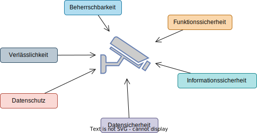

Wiederholung Begriffe
IT-Sicherheit in Bildern

Wiederholung Begriffe zur IT-Sicherheit
Funktionssicherheit safety
Ein System ist funktionssicher, wenn es unter normalen Betriebsbedingungen die festgelegte Funktionalität bietet. Ein funktionssicheres System führt keine unzulässigen Funktionen aus.
Beispiel: Sicherheitskamera
Die Kamera:
- Muss sicher montiert sein, um Stürze oder Verletzungen zu vermeiden.
- Darf keine Überhitzung oder elektrische Fehler verursachen.
- Sollte wetterfest sein (bei Außeninstallationen), um Schäden durch Regen oder Schnee zu verhindern.
Informationssicherheit security
Ein funktionssicheres System ist informationssicher, wenn es keine unautorisierten Informationspreisgabe oder -veränderung zulässt.
Beispiel: Sicherheitskamera
Bei der Kamera:
- Sollten Videoübertragungen über das Internet verschlüsselt werden (z. B. mit AES-256) zur Abwehr von Hackerangriffen.
- Sollte es Zugriffsbeschränkungen geben (z. B. Passwortschutz oder Überwachung nur in einem abgesperrten Raum).
Datensicherheit protection
Ein funktionssicheres System, dass Daten und Systemressourcen vor Verlust und unautorisierten Zugriffen schützt, bietet Datensicherheit. Dazu zählen insbesondere auch Maßnahmen zur redundanten Datenspeicherung (backup).
Beispiel: Sicherheitskamera
Bei der Kamera:
- Sollten Backups der Aufnahmen gemacht werden, um Datenverlust zu vermeiden.
- Sollten gespeicherte Aufnahmen gegegenenfalls verschlüsselt werden um Datenlöschung zu verhindern.
- Sollte es Zugriffsbeschränkungen geben (z. B. Passwortschutz oder Überwachung nur in einem abgesperrten Raum).
Datenschutz privacy
Der Begriff Datenschutz bezeichnet den Schutz vor Informationen, die eine Person betreffen. Gesetzliche Bestimmungen legen Sicherheitsanforderungen fest und regeln das informationelle Selbstbestimmungsrecht.
Beispiel: Sicherheitskamera
Die Kamera:
- Darf nur Bereiche erfassen, die zur Überwachung zulässig sind (z. B. kein öffentlicher Raum oder Nachbargrundstücke).
- Andernfalls muss es bei öffentlichem Raum eine klare Kennzeichnung der Videoüberwachung geben (z. B. Hinweisschilder gemäß DSGVO).
- Sollte eine Anonymisierungsfunktion (z. B. Maskierung von sensiblen Bereichen) haben.
Verlässlichkeit dependability
Ein verlässliches System führt keine unzulässigen Funktionen aus (Funktionssicherheit) und erbringt die festgelegten Funktionen zuverlässig (reliability).
Beispiel: Sicherheitskamera
Die Kamera:
- Sollte auch bei schlechten Lichtverhältnissen oder Ausfall der Internetverbindung zuverlässig funktionieren.
- Muss eine stabile Stromversorgung oder Akkureserve bieten.
- Sollte Fehlermeldungen oder Systemausfälle automatisch erkennen und melden.
- Muss eine konstante Aufzeichnungsqualität ohne Bildausfälle sicherstellen.
Beherrschbarkeit controllability
Keine unzulässigen Beeinträchtigung von Rechten oder schutzwürdigen Belangen der Betroffenen durch Vorhandensein oder Nutzung von IT-Systemen. (Sicherheit vor dem System).
Beispiel: Sicherheitskamera
Bei der Kamera sollte es beispielsweise folgende Funktionen geben:
- Bedienung über eine benutzerfreundliche Oberfläche (z. B. Webinterface oder App).
- einfache Konfiguration (bspw. von Aufnahmezeiten und -bereichen)
Basisschutzziele
Vertraulichkeit confidentiality
Daten dürfen nur von den Personen eingesehen oder offengelegt werden, die dazu auch berechtigt sind. Dazu gehört auch die Datenübertragung. Beinhaltet alle Maßnahmen zum Zugriffsschutz.
Integrität integrity
Daten dürfen nicht unerkannt bzw. unbemerkt verändert werden. Beinhaltet alle Maßnahmen zum Bestandsschutz.
Verfügbarkeit availability
Beschreibt die Zeit, in der das System funktioniert bzw. es die erforderlichen Daten und Funktionen bereitstellt. Beinhaltet alle Maßnahmen zum Ausfallschutz.
erweiterte Schutzziele
Verbindlichkeit reliability
Es darf nicht möglich sein, ausgeführte Handlungen abzustreiten.
Zurechenbarkeit imputability
Es muss möglich sein, Handlungen eindeutig dem zuzuordnen, der sie ausgeführt hat.
Authentizität authenticity
Es muss die Echtheit (bzw. Vertrauenswürdigkeit) der Datenverarbeitenden Person/des Systems gewährleistet werden. Autorisierung ist die Überprüfung der Authentizität.